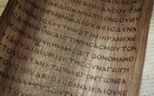

Textus Receptus – czy faktycznie najlepszy?

Ostatnimi czasy dość głośno podnoszą się głosy kwestionujące rzetelność przekładów na język polski. Twierdzi się, że tekst grecki, z którego tłumaczono, niekoniecznie jest tekstem autentycznym. Niektórzy uważają, że Biblie najbezpieczniej jest tłumaczyć z tak zwanego Textus Receptus – greckiego tekstu Nowego Testamentu wydawanego od XVI wieku, z którego tłumaczono znane, protestanckie przekłady – między innymi angielską King James Version oraz polską Biblię Gdańską. Od XIX wieku weszły w użycie inne krytyczne teksty greckiego Nowego Testamentu, na których opiera się większość współczesnych przekładów na języki narodowe. Oto zarzuty, które najczęściej pojawiają się w związku z tą sprawą:
1. Textus Receptus, na których oparte są klasyczne protestanckie przekłady od XVI do XIX wieku, jest tekstem większości dostępnych nam manuskryptów – jest tożsamy z tzw. Tekstem Większościowym (Majority Text).
2. Odwrót od Textus Receptus zapoczątkowali dwaj uczeni – Brooke F. Westcott oraz Fenton J.A. Hort, którzy deklarowali się jako agnostycy oraz mieli związek z okultyzmem. Większość współczesnych przekładów oparta jest o ich tekst. W związku z negatywną opinią o tych uczonych, nie mogą być oni uznani za autorytety przez odrodzonych chrześcijan.
3. Kodeksy i manuskrypty odnajdowane w XIX wieku mają podejrzane pochodzenie – aleksandryjskie. Tereny te wiąże się z gnozą i arianizmem.
4. Rodziny manuskryptów spoza Textus Receptus są niebezpieczne ponieważ zaprzeczają bóstwu Pana Jezusa.
Ponieważ argumenty są poważne, warto przyjrzeć się im bliżej. Aby to uczynić, zacznijmy od początku.
Historia wydań greckiego Nowego Testamentu
Erazm z Rotterdamu – w czasach nowotestamentowych językiem pełniącym rolę „międzynarodową” był grecki, stąd nie jest rzeczą dziwną, że święte pisma chrześcijańskie zostały zapisane w tym właśnie języku1. Nie jest także tajemnicą to, że nie posiadamy dzisiaj oryginałów pism Nowego Testamentu (autografów). Wszystko, co pozostaje do naszej dyspozycji – to odpisy. Do naszych czasów przetrwało mnóstwo tego rodzaju kopii zapisanych w grece koine. Niemal równolegle dokonywano także przekładów na języki narodowe – łacinę, syryjski, etiopski i wiele innych. Przekładów dokonywano oczywiście z dostępnych greckich manuskryptów.
Stopniowo greka przestawała mieć dominujące znaczenie na zachodzie Europy, gdzie sukcesywnie wypierała ją łacina. Dominującą rolę zdobyła łacińska Wulgata, która stała się powszechnie obowiązującym przekładem na terenach zachodnich, zdominowanych przez rzymskokatolicką wersję chrześcijaństwa. Na terenach Wschodu, aż do upadku Bizancjum, cały czas tworzone były kopie greckie – tam greka była wciąż językiem żywym. Gdy nadeszły czasy Reformacji, pragnienie posiadania tłumaczenia na poszczególne języki narodowe oczywiście wzrosło. Co prawda przetłumaczono na niektóre języki Wulgatę, jednak brak było przekładów dokonanych w oparciu o oryginalne języki, nie zaś o łacinę. Stąd wynikła konieczność sięgnięcia do tekstu greckiego. Pytanie tylko – jakiego? Manuskryptów w owym czasie nie było wiele, dodatkowo różniły się one w niektórych miejscach między sobą. Nie bardzo można było też znaleźć taki, który zawierałby całość Nowego Testamentu.
W takich właśnie warunkach pierwsze dwie osoby podejmują się dzieła wydania całości Nowego Testamentu w języku greckim. Co ciekawe, pierwszym z nich był rzymskokatolicki kardynał – Francisco Jimenez de Cisneros. Jego Nowy Testament był gotowy do druku już w 1514 roku, jednak z różnych przyczyn wydany dopiero w 15222. Drugą osobą był bardziej nam znany Erazm z Rotterdamu, którego pierwsze wydanie Nowego Testamentu ukazało się drukiem na początku 1516 roku w Bazylei.
Erazm nie posiadał żadnego manuskryptu obejmującego całość Nowego Testamentu. Korzystał z siedmiu kopii – wszystkich dość późnych. Należały do nich:
XII-wieczne minuskuły o numerach (według numeracji Nestle’a):
– 1 (Ewangelie, Dzieje Apostolskie, Listy)
– 2 (Ewangelie)
– 7 (Ewangelie)
– 2815 (Dzieje Apostolskie i Listy)
– 2814 (Objawienie)
XV-wieczne minuskuły o numerach:
– 817 (Ewangelie)
– 2816 (Dzieje Apostolskie i Listy)
Do tych faktów warto dodać jeszcze kilka istotnych informacji. Pierwsza z nich to ta, że Erazm miał tylko jeden manuskrypt zawierający Objawienie, jednak nie był on kompletny. Brakowało między innymi sześciu ostatnich wersetów. Erazm przetłumaczył je z… łacińskiej Wulgaty na grekę. Błąd popełnił w wersecie dziewiętnastym – zamiast występującego we wszystkich greckich manuskryptach apo tou ksylou („z drzewa”), w tekście Erazma czytamy: apo biblou („z księgi”)3. Do dzisiaj można ten błąd zaobserwować we wszystkich przekładach bazujących na Tekście Przyjętym (Textus Receptus). Będzie jeszcze o tym mowa nieco dalej.
W swoim drugim wydaniu z 1519 roku, Erazm dokonał wielu poprawek oraz skorzystał z dodatkowego manuskryptu – minuskułu nr 3, pochodzącego z XII wieku i zawierającego cały tekst Nowego Testamentu za wyjątkiem Objawienia. To wydanie posłużyło Lutrowi do przekładu Nowego Testamentu na język niemiecki, a Wiliamowi Tyndale’owi – na język angielski.
Trzecie wydanie z 1522 roku zaznaczyło się tym, że zawierało tzw. Comma Johanneum – sporny fragmentu z 1 Listu Jana 5:7,8 który w Biblii Gdańskiej ma brzmienie:
Albowiem trzej są, którzy świadczą na niebie, Ojciec, Słowo i Duch Święty, a ci trzej jedno są. A trzej są, którzy świadczą na ziemi: Duch i woda, i krew, a ci trzej ku jednemu są.
Słów pogrubionych brak było w greckich manuskryptach, z których korzystał Erazm, zabrakło ich więc także w pierwszych dwóch wydaniach tekstu erazmiańskiego. Spowodowało to krytykę, ponieważ fragment ten z kolei upowszechniony był w łacińskiej Wulgacie. W efekcie uczony zadeklarował, iż jeśli znajdzie się choć jeden grecki manuskrypt zawierający sporne słowa, to opublikuje je w następnym wydaniu. Dość szybko znalazł się pochodzący z XVI wieku minuskuł 61, w którym Comma Johanneum występowało. Erazm musiał więc być konsekwentny.
W latach 1527 i 1535 ukazały się kolejne – IV i V – wydania tekstu erazmiańskiego, jednak brak w nich było znaczących zmian. „Epoka Erazma” dobiegła końca.
Robert Stefanus – opublikował cztery wydania Nowego Testamentu kolejno w latach 1546, 1549, 1550, 1551. Trzecie wydanie opierało się na 15 greckich manuskryptach (w tym na pochodzącym z V-go wieku Kodeksie Bezy) oraz greckim tekście Biblii Kompluteńskiej. Po raz pierwszy zamieszczono w nim aparat krytyczny, dlatego można powiedzieć, że był to pierwszy krytyczny, grecki tekst Nowego Testamentu. W czwartym wydaniu po raz pierwszy dokonano podziału na wiersze. Trzecie wydanie z 1550 uznawane jest za „angielski” Textus Receptus.
Teodor Beza – opublikował 9 wydań Nowego Testamentu w latach 1565-1604, a dziesiąte ukazało się w 1611, już po jego śmierci. Wszystkie bazują na trzecim wydaniu tekstu Stefanusa, choć zawierają nieco lepszy aparat krytyczny (17 manuskryptów). Na podstawie wydań z lat 1588 oraz 1598, przetłumaczono na angielski i wydano w 1611 roku, sławną King James Version.
Bracia Bonawentura i Abraham Elzevir – wydali w latach 1624-1678 siedmiokrotnie grecki Nowy Testament bazując w głównej mierze na tekście Bezy, oraz uwzględniając Erazma oraz Stefanusa. Drugie wydanie z 1633 roku opatrzone było słynnym wstępem: Textum ergo habes, nunc ab omnibus receptum, in quo nihil immutatum aut corruptum damus (“Tekst, który masz, jest teraz przez wszystkich przyjęty, w którym niczego nie zmieniliśmy ani nie uszkodziliśmy”). W ten sposób nazwa Textus Receptus stała się znana szerokiemu światu i weszła na stałe do środowiska chrześcijańskiego. Na podstawie tego tekstu powstało większość protestanckich przekładów „kontynentalnych”, na których nawróciły się i wzrastały setki tysiące chrześcijan. Jednakże, jak pokazała historia, taki stan rzeczy miał ulec zmianie
Wraz z upływem czasu znajdowano coraz nowe manuskrypty i okazywało się, że nie są one jednorodne. To doprowadzało do nowych wydań greckiego Nowego Testamentu, uwzględniającego stopniowo odkrywane materiały.
John Mill – owocem jego trzydziestoletniej pracy był grecki NT wydany w 1707 roku. Co prawda wydrukował on tekst Stefanusa z 1550 roku, jednak w przypisach wymienił różne warianty korzystając z ponad 80 greckich manuskryptów, dzieł Ojców Kościoła, oraz wczesnych przekładów.
Johann Albrecht Bengel – w 1734 roku wydał grecki tekst NT, który nie odbiegał zbytnio od Textus Receptus. Wartościowe były jednak marginesowe warianty tekstu jak również zaproponowany przez niego podział rękopisów na należące do rodziny azjatyckiej oraz afrykańskiej. Był także osobą, która wprowadziła do krytyki tekstu pogląd o prawdziwości lekcji trudniejszych w stosunku do lekcji łatwiejszych (lectio difficilior potior).
Johann Wettstein – po około 40 letniej pracy, w roku 1751 ukazał się jego grecki tekst NT, który oparty był na ponad 200 greckich manuskryptach, między innymi na Kodeksie Aleksandryjskim. Wydanie to różniło się od Textus Receptus, między innymi w 1 Liście do Tymoteusza 3:16. Jako pierwszy dokonał podziału manuskryptów na majuskuły, minuskuły i lekcjonarze.
Johann Jakob Griesbach – w latach 1774-1775 wydał on krytyczny tekst Nowego Testamentu oparty o Textus Receptus, jednak z bardzo cennymi przypisami. Uważany jest czasami za pierwszego uczonego, który podzielił manuskrypty na 3 typy tekstu: aleksandryjski, zachodni i bizantyjski, choć tak naprawdę za protoplastę pomysłu należy uznać J. Bengela (podział na tekst azjatycki oraz afrykański) oraz przede wszystkim Johanna Semlera (podział na tekst aleksandryjski, zachodni oraz wschodni czyli bizantyjski). Griesbach był tym, który najbardziej spopularyzował tą teorię, przejętą następnie z drobnymi modyfikacjami przez Westcotta i Horta, i obecną praktycznie aż do dzisiaj w krytyce tekstu biblijnego.
Karl Lachmann – w wydaniu z roku 1831 oraz 1842-1850 odszedł od Textus Receptus. Porzucając Textus Receptus jako pierwszy oparł się na najwcześniejszych manuskryptach, co w zasadzie równało się odłożeniu na półkę tekstu bizantyjskiego. Poniżej przedstawiam manuskrypty, na których oparł swe wydanie Lachmann wraz z typami tekstu przypisanymi konkretnym kodeksom.
Ewangelie:
– Kodeks A (K. Aleksandryjski) – V wiek (tekst bizantyjski/wiele wariantów t. aleksandryjskiego)
– Kodeks B (K. Watykański) – IV wiek (tekst aleksandryjski)
– Kodeks C (K. Efrema) – V wiek (tekst aleksandryjski/bizantyjski)
– Kodeks D (K. Bezy) – V/VI wiek (tekst zachodni)
– Kodeks P (K. Gwelferbytański A)- VI wiek (tekst bizantyjski)
– Kodeks Q (K. Gwelferbytański B) – V wiek (tekst bizantyjski)
– Kodeks T (K. Borgianus) – V wiek (tekst aleksandryjski)
– Kodeks Z (K. Dubliński) – VI wiek (tekst aleksandryjski)
Dzieje Apostolskie i Listy Powszechne:
– Kodeks A (K. Aleksandryjski) – V wiek (tekst aleksandryjski)
– Kodeks B (K. Watykański) – IV wiek (tekst aleksandryjski)
– Kodeks C (K. Efrema) – V wiek (tekst aleksandryjski/bizantyjski)
– Kodeks D (K. Bezy) – V/VI wiek (tekst zachodni)
– Kodeks E (K. Laudiański) – VI wiek (tekst zachodni/bizantyjski)
Listy Pawła:
– Kodeks A (K. Aleksandryjski) – V wiek (tekst aleksandryjski)
– Kodeks B (K. Watykański) – IV wiek (tekst aleksandryjski)
– Kodeks C (K. Efrema) – V wiek (tekst aleksandryjski/bizantyjski)
– Kodeks D (K. Bezy) – V/VI wiek (tekst zachodni)
– Kodeks G (K. Boernerianus) – IX wiek (tekst zachodni)
Apokalipsa:
– Kodeks A (K. Aleksandryjski) – V wiek (tekst aleksandryjski)
– Kodeks C (K. Efrema) – V wiek (tekst aleksandryjski)
Konstanty von Tischendorf – ukazało się osiem wydań jego Nowego Testamentu. Trzy pierwsze zbliżone do tekstu aleksandryjskiego, cztery następne do Textus Receptus, zaś ósme – najbardziej znane i opublikowane w latach 1869/72 – oparte zostało głównie na „aleksandryjskim” Kodeksie Synajskim, odnalezionym przez Tischendorfa w 1844 roku.
Frederick Scrivener – jako pierwszy odróżnił Tekst Większościowy (bizantyjski) od Textus Receptus. Krytyk pracy Westcotta i Horta.
Brooke Foss Westcott i Fenton John Anthony Hort – wydali w 1881 roku The New Testament in the Original Greek. Tekst oparty był głównie na dwóch „aleksandryjskich” Kodeksach – Synajskim i Watykańskim. Zgodność tych dwóch świadectw traktowana była jako dowód na autentyczność tekstu. Zdaniem uczonych, na uwagę zasługuje jednak nie tylko sam tekst, lecz przede wszystkim zawarty w tej publikacji “Wstęp” oraz “Appendix” – w całości napisane przez Horta – w których autor „rozprawia się” z poglądem o wyższości bizantyjskiego Tekstu Większościowego nad tekstem aleksandryjskim.
Westcott i Hort byli zdania, że wszystkie manuskrypty można podzielić na 4 grupy – tekst syryjski (bizantyjski), zachodni, aleksandryjski oraz neutralny. Te dwa ostatnie uważa się dzisiaj za tożsame.
Eberhard Nestle – w 1898 roku wydał Novum Testamentum Greace. W pracy tej Nestle porównał teksty Westcotta-Horta, Tischendorfa oraz Weymoutha (później zastąpionego tekstem Bernharda Weissa). Kiedy teksty się różniły, zwyciężała wersja dwóch zgodnych świadectw, natomiast trzeci był umieszczany jako wariant. Tekst Nestle’a stał się podstawą pod tłumaczenia dokonywane przez Brytyjskie i Zagraniczne Towarzystwo Biblijne i w ten sposób jego zasięg stał się ogólnoświatowy. Od 13-tej edycji nadzór nad wydaniami sprawował Erwin Nestle – syn Eberharda, zaś od 26-go – Kurt Aland.
Choć pierwotnie tekst Westcotta-Horta był jednym z trzech podstawowych, według którego oceniano poprawność wariantu, to jednak od wielu lat już tak nie jest. Tekst grecki wydania Nestle’a-Alanda stał się tekstem krytycznym w pełnym tego słowa znaczeniu już dawno temu. Warto także zaznaczyć, że obecna wersja tekstu bazowego w wydaniach Nestle-Aland jest taka sama (od wydania 26-go) jak w wydaniach United Bible Societies (od wydania 3-go) – różnice dotyczą jedynie aparatu krytycznego. Wydania te służyły i służą jako podstawa do ogromnej większości przekładów protestanckich na języki narodowe.
Zarzuty
Po tym spojrzeniu na historię wydań krytycznych Nowego Testamentu, łatwiej będzie nam ustosunkować się do kilku podstawowych zarzutów, które wyszczególniłem na początku opracowania.
Zarzut: Textus Receptus, na których oparte są klasyczne protestanckie przekłady od XVI do XIX wieku, jest tekstem większości dostępnych nam manuskryptów – jest tożsamy z tzw. Tekstem Większościowym (Majority Text). Ponieważ ogromna większość manuskryptów tworzy Textus Receptus, więc to w oparciu o ten tekst powinno dokonywać się przekładów
To główny i podstawowy zarzut, dodajmy – zarzut nieprawdziwy. Nie ma znaku równoważności pomiędzy Textus Receptus a tzw. Tekstem Większościowym. Ten ostatni, to po prostu rodzina bizantyjska, czyli mnóstwo manuskryptów pochodzących głównie z terenów dawnego Bizancjum. Textus Receptus faktycznie bazuje na takich rękopisach, jednak na ich bardzo skromnym wycinku – jest zaledwie skromnym podzbiorem Tekstu Większościowego. Za podstawę miał kilkanaście – w większości bardzo późnych – manuskryptów. Dodatkowo, zawiera on w sobie także wiele wariantów tekstu zachodniego, ponieważ do jego kompilacji posłużył Kodeks Bezy.
Nic więc dziwnego, że pomiędzy Tekstem Większościowym a Textus Receptus występuje wiele różnic. W artykule zatytułowanym Westcott & Hort vs. Textus Receptus: Which is Superior?4. Douglas Kutilek przywołuje wyliczenia Daniela Wallace’a5, wedle których Textus Receptus różni się od Tekstu Większościowego w 1838 miejscach, w wielu miejscach popierając warianty tekstu aleksandryjskiego. W Tekście Większościowym nie znajdziemy na przykład występującego w Textus Receptus fragmentu z 1J 5:7 mówiącego o Ojcu, Synu i Duchu. Tak więc osoby, które w dzisiejszym czasie preferują Textus Receptus, nie zdają sobie zazwyczaj sprawy z tego, że jest to bardzo słaby i mocno ograniczony reprezentant Tekstu Większościowego. W niektórych miejscach zaś ewidentnie błędny (między innymi wspomniane Obj 22:19 czy też 1J 5:7). Powtórzmy jeszcze raz: Textus Receptus nie jest reprezentatywny dla Tekstu Większościowego – to jego skromny podzbiór.
Zarzut: Odwrót od Textus Receptus zapoczątkowali dwaj uczeni – Brooke F. Westcott oraz Fenton J.A. Hort, którzy deklarowali się jako agnostycy oraz mieli związek z okultyzmem. Większość współczesnych przekładów oparta jest o ich tekst. W związku z negatywną opinią o tych uczonych, nie mogą być oni uznani za autorytety przez odrodzonych chrześcijan
To jest także niestety nieprawdą. Przede wszystkim, to nie Westcott i Hort rozpoczęli odwrót od Textus Receptus. Pierwszym uczonym, który wydał krytyczny tekst Nowego Testamentu oparty na wczesnych manuskryptach a nie Textus Receptus był Karl Lachmann. Uczynił to po raz pierwszy w wydaniu z 1831 roku. Cztery z siedmiu wydań Tischendorfa oparte były także na tekście aleksandryjskim, w opozycji do Textus Receptus. Dopiero później do akcji wchodzą Westcott i Hort. Nieprawdą jest także to, że większość współczesnych przekładów oparta jest o tekst Westcotta i Horta. Przekłady protestanckie bazują niemal bez wyjątku na tekście Nestle’a-Alanda, który co prawda jest tekstem aleksandryjskim, jednak nie jest tekstem Westcotta-Horta, których nadmierne sympatie do Kodeksu Watykańskiego i Synajskiego są przez współczesnych uczonych krytykowane. Jest prawdą, że w początkowym okresie tekst Nestle’a bazował głównie na pracy Westcotta-Horta, Tischendorfa i Weymoutha, jednak dość szybko to się zmieniło.
Czasami słyszy się także opinię, że to Westcott i Hort jako pierwsi podzielili manuskrypty na rodzinę aleksandryjską, bizantyjską i zachodnią i bardzo subiektywnie uznali tekst aleksandryjski za najlepszy. Geneza podziału na te rodziny była jednak inna i Westcott i Hort nie byli tutaj protoplastami. Poniżej przedstawiam w następstwie chronologicznym informacje o tym, jak poszczególni uczeni dzielili manuskrypty i jak je nazwyali. W nawiasach podałem nazwy funkcjonujące obecnie wśród uczonych zajmujących się krytyką tekstu.
J. Bengel
– azjatycki (bizantyjski)
– afrykański (pozostałe rodziny)
J.S. Semler
– wschodni (bizantyjski)
– zachodni
– aleksandryjski
J. Griesbach
– bizantyjski
– zachodni
– aleksandryjski
Westcott-Hort
– syryjski (bizantyjski)
– zachodni
– aleksandryjski
– „neutral” – wczesnoaleksandryjski (aleksandryjski)
Widać więc wyraźnie, że Westcott i Hort w zasadzie przejęli to, co wcześniej odkryli Bengel, Semler (głównie) oraz Griesbach.
Zarzut: Kodeksy i manuskrypty odnajdowane w XIX wieku mają podejrzane pochodzenie – aleksandryjskie. Tereny te wiąże się z gnozą i arianizmem
To jest dość dziwny zarzut. Zapomina o tym, że Egipt to także „siedziba” Aleksandra oraz Atanazego polemizującego z Ariuszem. Z kolei chyba najgłówniejszy poplecznik Ariusza – Euzebiusz z Nikomedii (najpierw z Bejrutu) to tereny „bizantyjskie”. Zatem nie bardzo sprawdza się tutaj reguła „z terytoriów”. Gdy się doda jeszcze to, że ariański biskup Wulfila, który nawrócił Gotów przekładając Biblię na ich język, uczynił to w oparciu o tekst bizantyjski, to jasnym staje się fakt, że kwestia arianizmu nie miała z poszczególnymi rodzinami tekstu zbyt wiele wspólnego. Uczeni XIX wieku wybierali tekst aleksandryjski nie dlatego, że zaistniał jakiś spisek. Po prostu ich zdaniem argumenty przemawiały za tym, że ten tekst był bliższy oryginalnemu. Te argumenty to:
– najstarsze znalezione rękopisy to tekst aleksandryjski
– tekst aleksandryjski ma poparcie wczesnych przekładów (syryjski, starołaciński)
– jest bardzo często cytowany u wczesnych Ojców Kościoła (II-IV wiek)
– tekst bizantyjski nie był tekstem większościowym aż do IX wieku. Stał się nim dlatego, że w Bizancjum w dalszym ciągu funkcjonowała greka i „produkowano” bardzo dużo nowych kopii. Na pozostałych terenach greka nie była używana, stąd zanik praktyki tworzenia nowych kopii.
Tezy te zostały poddane krytyce przez zwolenników tekstu bizantyjskiego, nierzadko bardzo przekonującej. Nie do końca jest bowiem prawdą, że tekst bizantyjski nie ma poparcia w starożytnych manuskryptach, przekładach czy też cytatach z Ojców Kościoła. We wszystkich tych przypadkach możemy odnaleźć bowiem wczesne tradycje rodziny bizantyjskiej. Dyskusja dotycząca tej sprawy trwa do tej pory i ciekawe argumenty padają zarówno z jednej jak i drugiej strony. Jednak teorię jakiegoś spisku bądź nieczystych intencji takich uczonych jak Westcott czy też Hort, bądź też bardziej współcześnie B. Metzger bądź D. Wallace.
Zarzut: Rodziny manuskryptów spoza Textus Receptus są niebezpieczne ponieważ zaprzeczają bóstwu Pana Jezusa
Jest prawdą, że na skutek odkryć wczesnych manuskryptów zostały usunięte z Biblii takie fragmenty tekstów jak 1J 5:7 czy też 1T 3:16 („ten, który objawiony jest w ciele” zamiast „Bóg objawiony w ciele”). Jednak o ile można prowadzić dyskusje co do tego ostatniego tekstu, to jednak trudno bronić prawdziwości fragmentu, który ma wsparcie jedynie 4 manuskryptów, bardzo późnych w dodatku, i nie występuje nawet w Tekście Większościowym. Z drugiej strony, nikt przecież nie kwestionuje takich fragmentów jak J 1:1 czy też J 20:28 – a więc tekstów o bardzo dużym ciężarze gatunkowym.
Podsumowując więc całą sprawę, przede wszystkim należy podkreślić bardzo wyraźnie, że obrona Textus Receptus bazująca na twierdzeniu o prawdziwości tekstowej tradycji bizantyjskiej nie ma najmniejszego sensu. Jak wykazałem bowiem wcześniej, ta ostatnia nie popiera bowiem wielu wariantów obecnych w Textus Receptus. Jeżeli jesteśmy zwolennikami teorii mówiącej, że prawdziwy i autentyczny tekst Nowego Testamentu przetrwał w manuskryptach rodziny bizantyjskiej a nie aleksandryjskiej bądź zachodniej, to powinniśmy propagować Tekst Większościowy, a nie Textus Receptus. Z drugiej strony, odrzucenie absurdalnych oskarżeń o nieczyste intencje występujące wśród uczonych popierających tekst aleksandryjski, pozwoli nam bez uprzedzeń i merytorycznie spojrzeć na argumenty obu stron i wyciągnięcie w miarę obiektywnych wniosków.
Przypisy:
- Niektórzy badacze sugerują, że pierwotnie Mateusz napisał swoją ewangelię po hebrajsku. Dopiero później została ona przełożona na grekę. ↩
- Całość nosi nazwę Biblii Kompluteńskiej. Sama Biblia została ujęta w pięciu tomach i zawiera tekst w języku hebrajskim, aramejskim, greckim i łacińskim. ↩
- Bruce M. Metzger, A Textual Commentary on the Greek New Testament, United Bible Society, 1994, str. 690. ↩
- Całość artykułu dostępna na stronie: http://www.bible-researcher.com/kutilek1.html ↩
- Daniel Wallace, “Some Second Thoughts on the Majority Text,” Bibliotheca Sacra , July-September, 1989, p. 276 ↩
↞ Spis treści Następny artykuł ↠
kopia strony: https://thaleia.pl/biblia/biblia-textus-receptus-czy-faktycznie-najlepszy Wszelkie prawa autorskie należą się autorowi tej strony
11a6bb13a7